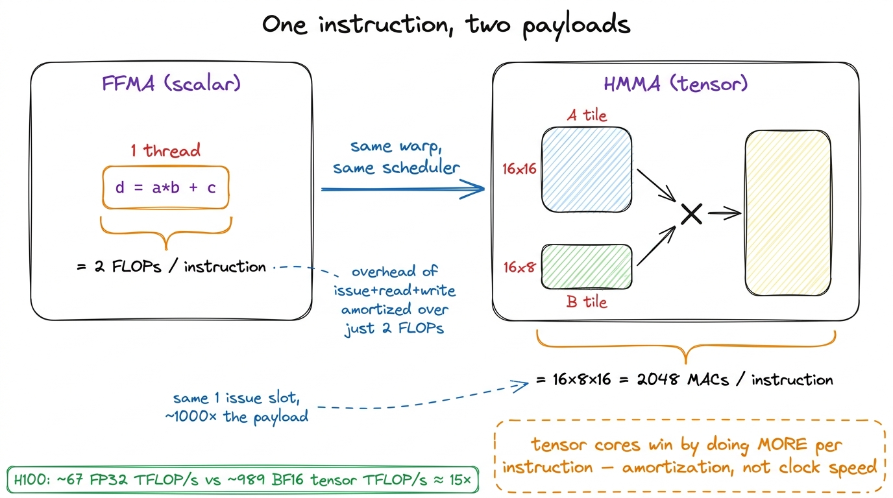
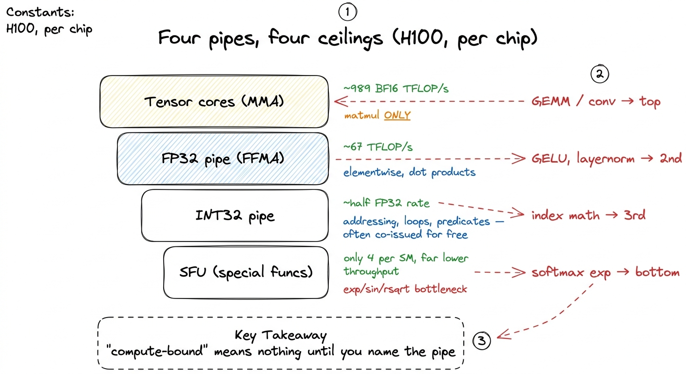
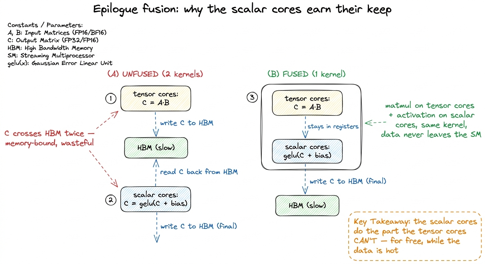
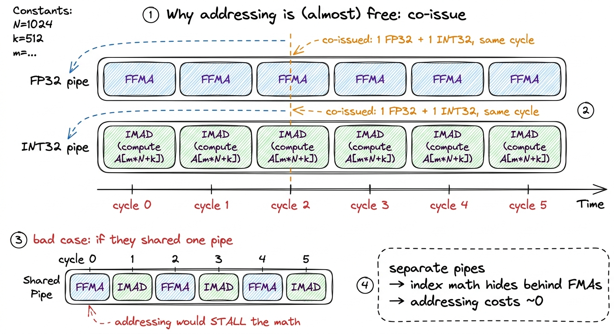
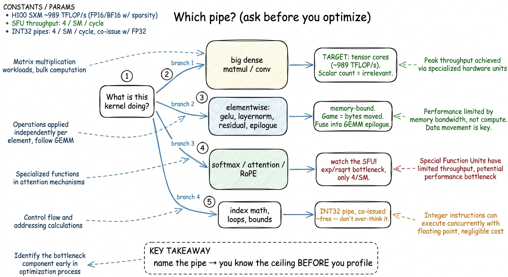

CUDA cores & the FP32/INT pipes
Let me start with a claim that sounds wrong the first time you hear it: on a modern NVIDIA GPU, the thing named after the whole platform — the CUDA core — is not where most of the arithmetic happens anymore. On an H100, the overwhelming majority of the FLOP/s live somewhere else entirely. And yet the CUDA cores are still there, in the tens of thousands, doing work that nothing else on the chip can do.
That tension is the whole article. If you get it wrong, you write a kernel that hits 100% of the wrong ceiling and feels finished while leaving 90% of the chip cold. If you get it right, you always know — before you write a line — which part of the silicon your problem is going to land on, and how fast it can possibly go.
So here is the question this article answers, stated plainly: what exactly is a CUDA core, why did it stop being where the FLOPs live, and when does it still decide whether your kernel is fast or slow?
We'll build up to that from zero. No prior GPU knowledge assumed. If you know that a CPU has a few big cores that run instructions, you know enough to start.
Starting from the CPU you already know
A CPU core is a whole little machine. It fetches an instruction from memory, decodes what that instruction means, figures out which instruction to run next (branch prediction, out-of-order scheduling), reads its operands, does the math, and writes the result back. A desktop CPU has maybe 8 to 24 of these. Each one is large, clever, and independent. It is built to make one stream of instructions finish as fast as possible.
Now here is the natural question: if that design is so good, why doesn't a GPU just have thousands of those little machines?
Because it can't afford to. All that cleverness — the fetch, the decode, the branch predictor, the scheduler — costs a lot of transistors and a lot of power. If you tried to build 10,000 full CPU cores, you'd run out of chip and out of watts long before you got there. The GPU makes a trade instead: it strips the cleverness out of the arithmetic unit and shares it.
 figure rendering · The CPU spends transistors on being clever per core. The GPU spends th
figure rendering · The CPU spends transistors on being clever per core. The GPU spends thThat picture is the central mental model for this whole article. Keep it in your head: one brain, many calculators. The "brain" is a piece of hardware called the warp scheduler. The "calculators" are the CUDA cores. Almost everything surprising about GPU performance falls out of this one arrangement.
What a CUDA core actually is
A CUDA core is a scalar arithmetic unit — an ALU that takes one pair of numbers, does one operation, and produces one result. That's it. It is not a "core" in the CPU sense at all. It has no instruction fetch. It has no decode. It has no scheduler of its own. It is a lane: a calculator that does exactly what it's told, when it's told.
Who tells it? The Streaming Multiprocessor (SM) that contains it. The SM owns all the control logic, and inside the SM the warp scheduler is the part that issues instructions. On each cycle it picks one instruction and hands it to a group of 32 lanes at once. That group of 32 is called a warp. Every lane in the warp runs the same instruction on the same cycle — but each lane applies it to its own registers, so 32 different results come out.1 This is why "CUDA core" is a slightly dishonest marketing term. NVIDIA's headline core count is really a lane count. The unit that actually decides what to execute — the warp scheduler — is far scarcer: four per SM on the H100, one for every 32 lanes. When you read "16,896 CUDA cores," read "16,896 calculators sharing 528 brains."
This execution style has a name: SIMT — Single Instruction, Multiple Threads. Single instruction (one thing the scheduler issued), multiple threads (the 32 lanes each with their own data). The CUDA cores are the "multiple threads" part. The scheduler is the "single instruction" part.
Here's the first place people trip. They picture the SM as one big uniform pool of identical "cores." It isn't. Physically, an SM contains several different kinds of scalar pipe, in different quantities, and NVIDIA's famous core count only counts one of them. On the H100, each SM has:
- 128 FP32 units — the single-precision (32-bit) floating-point pipes. This is the number NVIDIA reports as "CUDA cores per SM," and for FP32 specifically it's honest.
- 64 INT32 units — half as many integer pipes, for the whole-number math like array indexing and loop counters.
- 64 FP64 units — half as many double-precision (64-bit) pipes, running FP64 at half the FP32 rate, for the HPC and national-lab crowd who need doubles.2 That 64:128 FP64 ratio is a data-center luxury. Consumer Ada cards (the RTX 40-series) ship a token 1/64th-rate FP64 unit instead, because no video game needs double precision and NVIDIA would rather sell you the fast FP64 in a data-center part. Same architecture family, deliberately different silicon.
So "an H100 SM has 128 CUDA cores" means "128 FP32 lanes." The integer and double-precision hardware is real, separately counted, and — this is the part that matters in a moment — physically distinct from the FP32 pipe.
 figure rendering · One SM, drawn to scale by count. The scalar pipes outnumber the tensor
figure rendering · One SM, drawn to scale by count. The scalar pipes outnumber the tensorFMA: the one instruction the whole thing is built around
Before we can compare the CUDA cores to anything, we have to know what one of them can do in one cycle. So let's zoom all the way in, past the SM, past the warp, down to a single lane on a single cycle, and ask the smallest possible question: what is the most useful thing a scalar float unit can do in one instruction?
The answer the hardware designers landed on is the fused multiply-add, or FMA: d = a * b + c. One instruction. It multiplies two numbers, adds a third, rounds once at the very end, and produces one result. And — this is the number to hold onto — it retires at a rate of one FMA per lane per cycle.
Why is FMA the atom of everything? Because the inner loop of almost all numerical computing is a dot product, and a dot product is nothing but a running sum of products:
// dot product of two length-K vectors
float acc = 0.0f;
for (int k = 0; k < K; ++k)
acc += a[k] * b[k]; // <-- exactly one FMA per iterationLook at that line acc += a[k] * b[k]. It is a multiply (a[k] * b[k]) and an add (acc += ...), fused. One FMA per term. When you look at the naive GEMM kernel and see acc += A[m*N+k] * B[k*N+n], you are watching the compiler emit exactly one FFMA machine instruction per turn of the k loop.3 FFMA is the actual SASS mnemonic — "Float Fused Multiply-Add" — that the compiler emits for FP32. If you disassemble a GEMM inner loop with cuobjdump -sass, the hot section is a wall of FFMA R_, R_, R_, R_ lines, one per accumulation. That wall is your scalar compute. So to first order, the entire scalar throughput of the chip is just its FMA throughput. Nail down the FMA rate and you've nailed down the ceiling.
Let's do exactly that, by hand, with no magic numbers dropped from the sky.
 figure rendering · Every number derived, none assumed. Two FLOPs per lane, 128 lanes, 132
figure rendering · Every number derived, none assumed. Two FLOPs per lane, 128 lanes, 132Follow the arithmetic in that figure, because it's the load-bearing calculation of the article. One FMA does two floating-point operations — a multiply and an add — so by the standard FLOP-counting convention each lane retires 2 FLOPs per cycle. One H100 SM has 128 FP32 lanes, so that's 128 × 2 = 256 FLOPs per cycle per SM. The GH100 die in an H100 SXM enables 132 SMs, so 256 × 132 = 33,792 FLOPs per cycle. At the ~1.98 GHz boost clock, 33,792 × 1.98e9 ≈ 66.9 × 10¹², which is about 67 FP32 TFLOP/s for the whole chip.4 The exact figure NVIDIA quotes for H100 SXM FP32 is 66.9 TFLOP/s. It's the honest, no-tricks single-precision number, and it's the ceiling every non-tensor-core kernel on the chip is fighting. The clock isn't a fixed constant either — real boost clocks drift with temperature and power, so treat 67 as a clean round ceiling, not a guarantee.
Hold onto that 67. It is the entire arithmetic budget the scalar cores get. Everything that follows is about how small that number turns out to be.
Why the CUDA cores stopped being where the FLOPs live
Now the uncomfortable comparison. We just did the by-hand math and got 67 TFLOP/s for all the FP32 lanes on an H100. Here is the number for the other arithmetic hardware on the same chip: the four tensor cores on each SM deliver about 989 TFLOP/s of BF16 with FP32 accumulation, and that's without turning on any sparsity tricks.
Stop and feel how strange that is. There are 128 FP32 lanes per SM and only 4 tensor cores per SM — a 32-to-1 ratio in NVIDIA's favor on the scalar side by count — and yet the four tensor cores win the FLOP/s race by roughly 15×.5 The glossary's shorthand is "tensor cores do ~100× the FLOP/s of CUDA cores." That's true if you compare the lowest-precision tensor mode (FP8) against FP64, or against a single scalar lane. Apples-to-apples — dense BF16 tensor vs dense FP32 scalar on the H100 — the ratio is about 15×. Compare against FP16/FP8 tensor modes and it's larger still. Either way the conclusion is identical: the FLOPs are not in the scalar pipes anymore. How on earth does 4 of something beat 128 of something else by more than an order of magnitude?
Here's the natural wrong guess: "the tensor cores must be clocked way higher, or each one must be enormous." Both are false. They run at the same clock, and while a tensor core is bigger than one lane, it is nowhere near 15× the throughput per transistor by brute force. The real answer is subtler and it's the whole point.
A tensor core does more per instruction. A scalar FFMA does 2 FLOPs and then the lane has to be fed another instruction to do 2 more. Every one of those 2-FLOP payloads costs a full trip through the machinery: the scheduler issues, operands get read from the register file, the result gets written back. That overhead is fixed no matter how tiny the payload. With a 2-FLOP payload, the overhead dominates.
A tensor core instruction — an HMMA, for matrix multiply-accumulate (MMA) — operates on whole tiles at once. One HMMA a warp issues performs on the order of 16 × 8 × 16 = 2048 multiply-accumulates in a single shot, cooperatively across the 32 threads of the warp. That's about 64 MACs per thread per instruction, versus the 1 FMA per thread an FFMA gives you. Same one issue slot. Same one trip through the scheduler. But the payload is a thousand times bigger, so the per-instruction overhead is amortized to almost nothing, and the reduction network that a scalar dot product has to walk one FMA at a time is hard-wired inside the tensor core.

figure rendering · The scalar pipe does 2 FLOPs per instruction; the tensor core does thoThis is exactly why the three regimes framing matters so much. If your kernel is a big matmul and you write it with FFMA on the scalar cores, your roofline's ceiling is that 67 TFLOP/s. You can tune until you hit 100% of that and still be leaving ~93% of the chip's arithmetic untouched, because the tensor cores are sitting there offering a roof 15× higher for the exact same problem. Reaching them is the entire back half of the GEMM ladder — and it's why a beautifully tuned FP32 kernel can sit right on the scalar roofline and still run an order of magnitude below cuBLAS. cuBLAS isn't beating you on the scalar roof. It moved to a different, taller roof.
Naming the pipe: four ceilings, not one
Here's a habit that will save you from the most common mistake in GPU work. When you say a kernel is "compute-bound," that phrase means almost nothing until you say which pipe. The scalar side isn't one ceiling. It's three, and the tensor cores add a fourth that towers over all of them.

figure rendering · The scalar side is not one ceiling but three, and the tensor cores towSo if the tensor cores own the FLOPs, why keep any CUDA cores at all? Because an enormous amount of real GPU work is not a matrix multiply, and none of it can touch a tensor core. Four categories keep the scalar pipes essential, and each one maps onto a bar in that pyramid.
Elementwise and reduction math. Activations (gelu, silu), normalization (layernorm, rmsnorm), residual adds, dropout masks, the epilogue of every GEMM — all elementwise, all one FMA at a time through the FP32 pipe. A tensor core physically cannot add a bias vector; that's not a matmul. Now, these ops are memory-bound anyway, so their low scalar FLOP/s ceiling is usually not the bottleneck — the bottleneck is bytes. But the scalar cores are the only hardware that can run them at all, which is exactly why fusing them into a tensor-core GEMM's epilogue is such a big win: you do the matmul on the tensor cores and the bias+activation on the scalar cores in the same kernel, while the data is already hot in registers, instead of writing it out and reading it back.

figure rendering · The clearest example of the two pipes cooperating: tensor cores do theAddressing and control. Every load and store needs an address computed first. A[m*N + k] is an integer multiply-add on the INT32 pipe before a single float arrives. Loop counters, predicates, bounds checks like if (m < N && n < N), pointer arithmetic for shared-memory tiles — all of it is integer scalar work running alongside the float work.
Transcendentals and special functions. exp, log, sin, sqrt, rsqrt, tanh — the guts of softmax, attention, and RoPE — don't run on the FP32 pipe at all. They run on the Special Function Unit (SFU), a separate, low-throughput scalar pipe with only four per SM. There are so few SFUs that a softmax-heavy kernel can bottleneck on exp throughput while the tensor cores and the FP32 pipes sit idle.6 With only 4 SFUs per SM versus 128 FP32 lanes, transcendental throughput is a small fraction of the FMA rate — often quoted around a quarter of one operation per lane-equivalent per cycle. Worse, the compiler frequently expands one transcendental into several SFU ops plus polynomial-refinement FMAs, widening the gap. If a profile shows you compute-bound but the tensor cores are cold and the SFU pipe is pegged, this is your culprit — and it's why FlashAttention works so hard to keep the softmax cheap.
Concurrent integer + float issue. Since the Turing architecture, the scalar datapath can co-issue an FP32 instruction and an INT32 instruction in the same cycle, because they're physically separate pipes. This is the payoff of the FP32 and INT32 hardware being distinct rather than one shared unit. On the H100's 128-FP32 / 64-INT32 split, this is why address arithmetic is often effectively "free": the INT32 pipe chews through your index math on the cycles the FP32 pipe is busy doing FMAs. A well-scheduled kernel hides all its addressing behind its real compute and pays almost nothing for it.

figure rendering · Because the integer and float pipes are physically separate, your indePutting it to work: the one habit this buys you
Let's make this concrete with the decision you'll actually make. Before you optimize any kernel, ask one question: which pipe is this going to run on? The answer tells you your ceiling before you've profiled anything.
If the answer is "a big dense matmul," the scalar FP32 count is irrelevant. Your only real target is the tensor cores. Anything you squeeze out of the CUDA cores here is a rounding error against a 989 TFLOP/s roof.
If the answer is "elementwise," or "reduction," or "softmax," the tensor cores are irrelevant — they can't run it. You'll be memory-bound or SFU-bound, and the game becomes bytes moved and special-function throughput, not FLOPs. Tuning the FP32 FMA rate on a memory-bound layernorm is polishing a part of the machine that was never the bottleneck.

figure rendering · The single most useful habit: identify the pipe first. The pipe handsThe failure mode I see most often is treating "compute-bound" as one thing. It isn't. You can be compute-bound against the 67 TFLOP/s scalar roof and feel finished, when the tensor cores were offering a roof 15× taller for the same problem the whole time. Naming the pipe — FP32, INT32, tensor, or SFU — turns the vague word "compute" into a specific number you can measure against.
And this is exactly why the next articles split into two threads. On one side, the tensor-core path, where we chase that 989 TFLOP/s roof one wgmma at a time. On the other, the memory path, where the scalar cores are already plenty fast and the entire fight is getting bytes to them fast enough to keep the lanes fed. Both threads start from the same question the three regimes taught us to ask — but now you know that "compute" was never one thing. It's four different pipes wearing one name, and the first move of every good kernel is figuring out which one you're standing on.